Un Reloj de Sol, caserito caserito

En sexto grado le conté a un amigo que me despertaba con un rayo de sol que se filtraba por la persiana y me daba justo en los ojos, todos los días. Por supuesto que era mentira. Pasó una vez y en el momento sentí la necesidad de agrandar la anécdota. El sol pasa por un camino un poco distinto cada día. A las nueve de la mañana de octubre pasa por la cama, a las nueve de la mañana de noviembre pasa por la mesa de luz.
Si la sombra de la ventana se mueve a cada hora, y pasa todos dias por un lado diferente, se puede hacer un reloj.
Que tán difícil puede ser hacer un reloj del sol?
Hay una herramienta que usé muchas veces para hacer instalaciones audiovisuales interactivas. Es un lenguaje visual de programación llamado Vvvv. Entre muchas otras cosas tiene un patch 'Sun', que toma como ínput un tiempo determinado, latitud y longitud, y te da como output de la orientación del sol en ese momento.
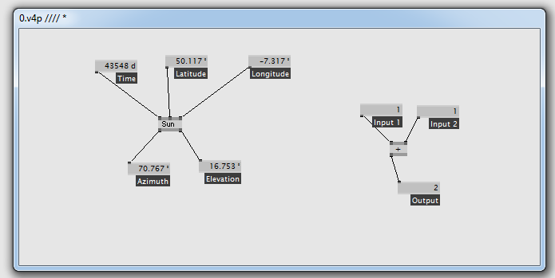
directo de la Wiki:
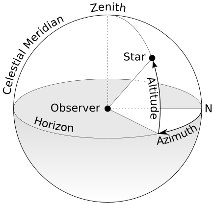
Hice un modelo que muestra dónde va a estar el sol en determinados momentos
Por ejemplo, este va a ser el recorrido que hace el sol un 13 de marzo:
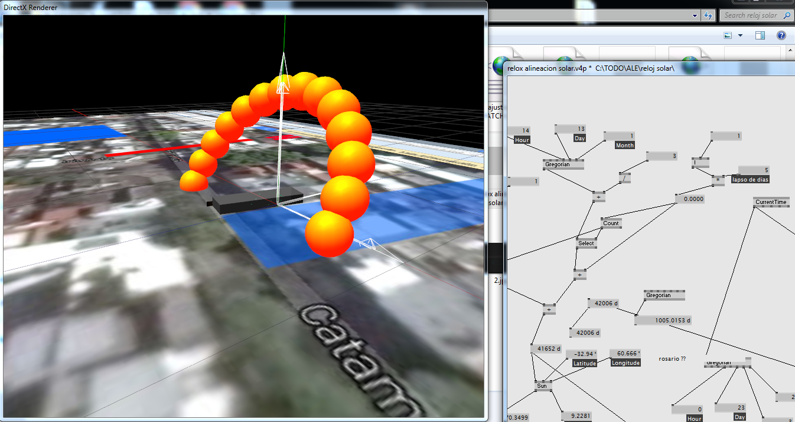
En vez de ver donde va a estar el Sol en cada hora de un día, se puede ver dónde va a estar el Sol cuando sean las 10:00 de la mañana a lo largo de todo el año.
A medida que pasan los meses se dibuja un infinito. Ese es el dibujo que va a seguir haciendo el sol en el cielo, a lo largo de los milenios.
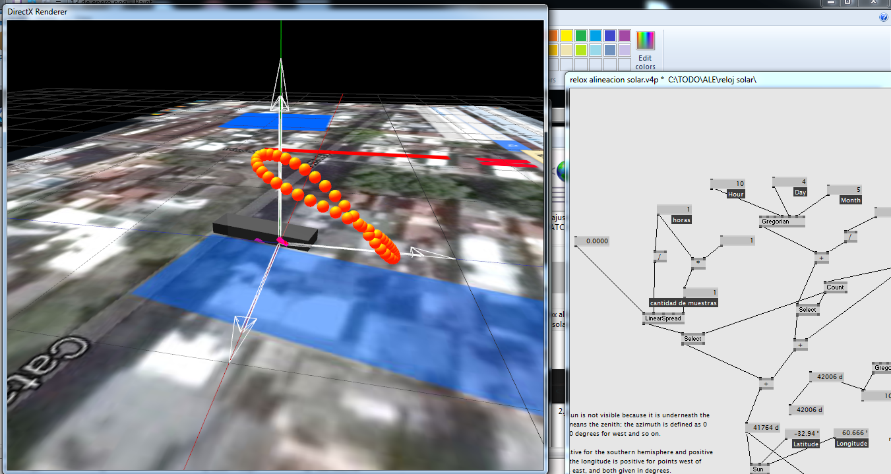
Sabiendo la posición del sol, y la de la pared, falta calcular donde van a caer los rayos del sol, o mejor dicho, la sombra
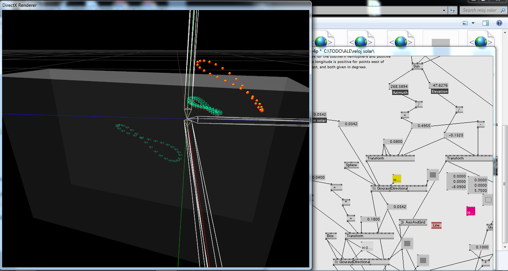
El diseño completo del reloj en la pared
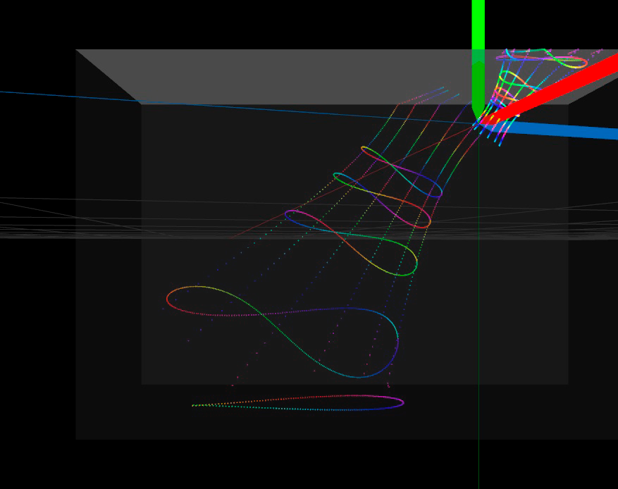
El recorrido del sol el primero de abril. Se puede ver que a las 12 del medio día la sombra va a caer en el piso
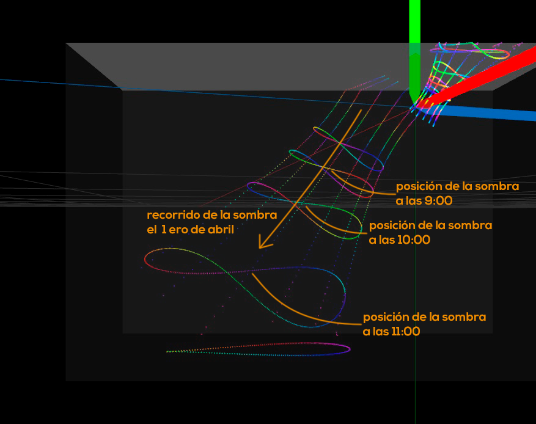
Pegué un papelito en el borde de la ventana para que haga de indicador o 'gnomón' y a lo largo de los días, mientras armaba el modelo, fuí marcando en la pared el lugar donde caía la sombra del gnomón y registrando la fecha y la hora. Como fuí marcando momentos aleatorios, quedó como una constelación de puntos marcados en la pared.
Una noche que estaba el modelo listo, usé un proyector para pasar el diseño de la pantalla a la pared. Cargué la fecha y la hora de los puntos registrados en la pared para ver si coincidían los puntos calculados con las marcas reales. Las dos constelaciones se alinearon de una manera emocionante. Se cerraba el círculo entre las tablas astronómicas en la que estaba basado el patch del modelo, mis propios cáclulos y unas ordinaras marcas en la pared

Reemplacé el gnomón de papel por uno de celofán rojo
Los sectores de la curva de las 10:00 que comprenden los meses de la primavera y otoño fueron ornamentados con motivos naturales diseñados y ejecutados por Pablo Panza
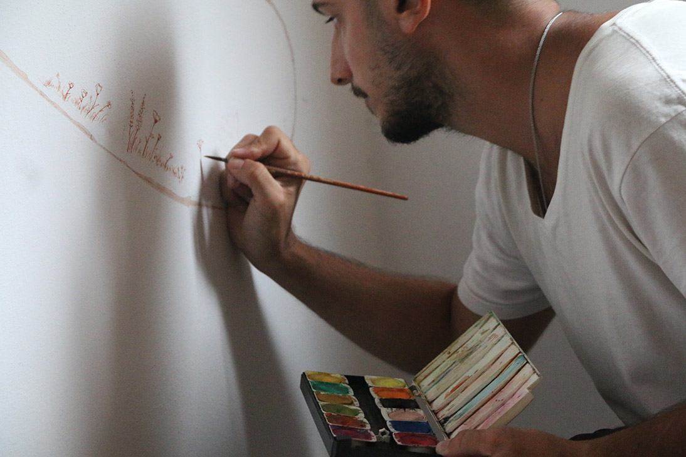
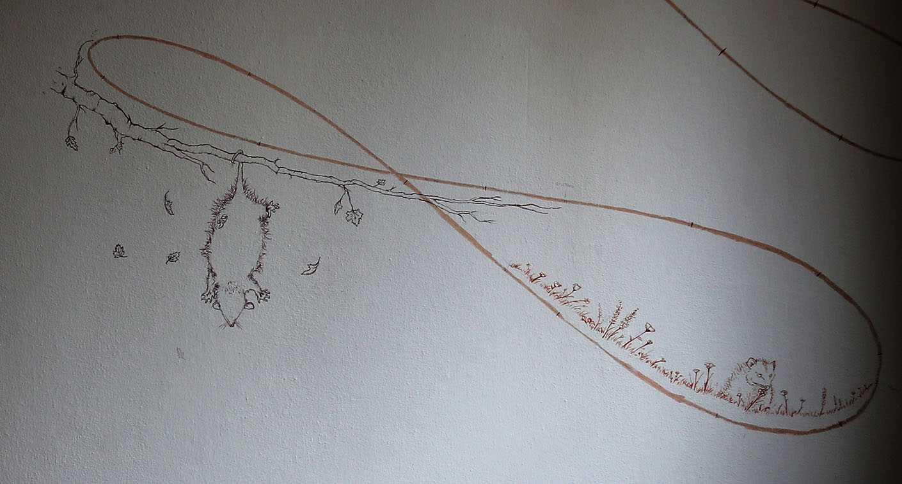
El reloj terminado
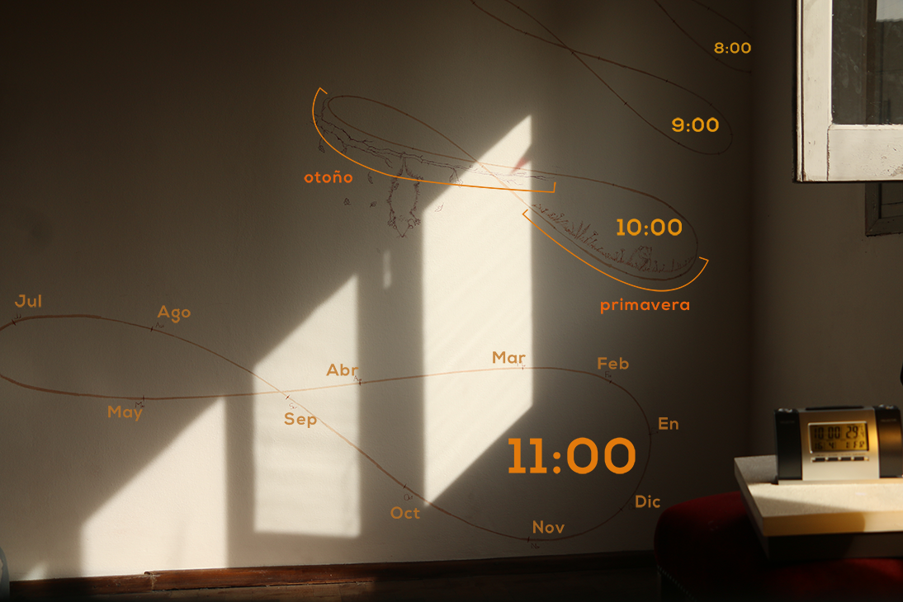
Con el tiempo encontré otros relojes solares con un diseño similar. Por ejemplo este en el Antiguo Ayuntamiento de Munich
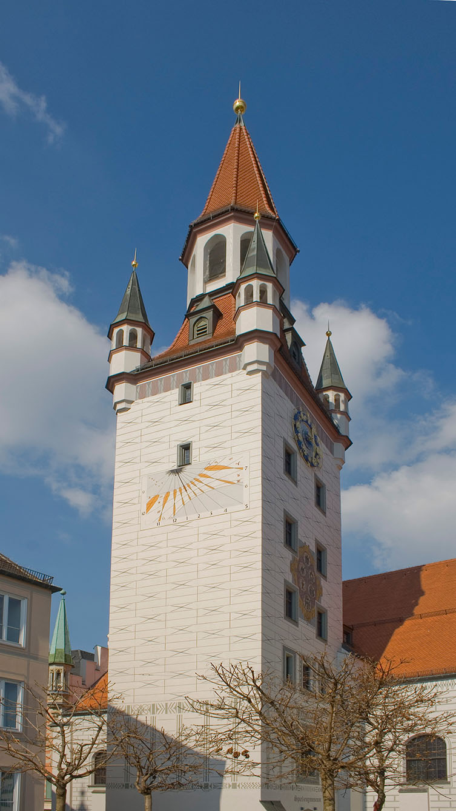
En este caso, en vez de dividir la curva de cada hora en meses se puede ver que fueron divididas por los períodos de los signos del zodíaco
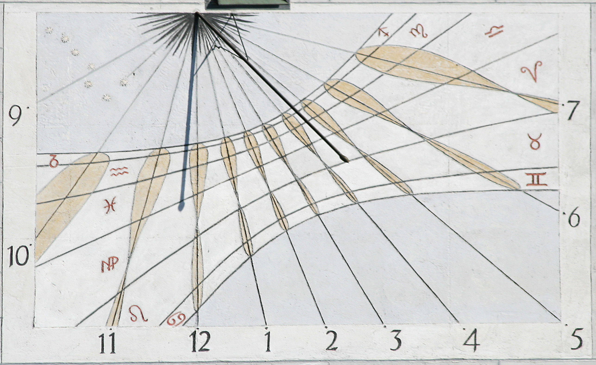